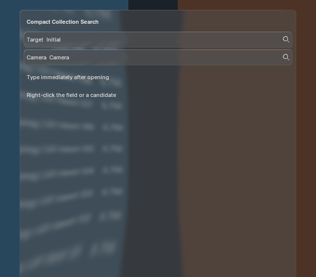
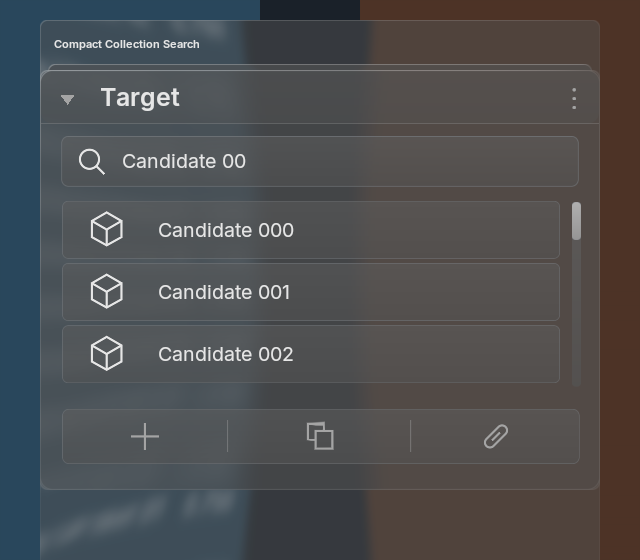
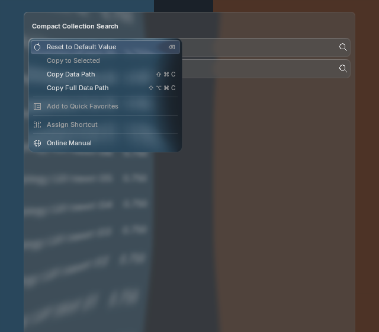

Actual Blender output: compact prop_search and template_search fields open the shared custom picker. Closed fields read only the current property; opening snapshots the candidates. Type immediately, navigate, select, or cancel. Successful selection closes the popover; a rejected host commit leaves it open for correction.



The picker inherits the field's shared BVT spring settings and strong glass; menus retain their own strong blur. The fixture reproduces PanelHost's existing base-glass pass before the canvas tint. It adds no production capture or blur pass. Across all 100 frames on each tested version, native BLF batching matches standalone submission exactly. One backdrop production, one strong blur, five offscreens and recorded font/shader/batch identities remain stable.
Blender 5.1.2 and 5.2.2 pass runtime and real-window checks, including immediate typing, row context menus, selection, cancellation, stale values, rejected commits, motion disable and teardown. Full-card search remains available with ui.search_popovers = False; its existing window and RNA regressions pass alongside pointer/decorator checks.
Parity remains partial. These are actual implementation captures, not generated-reference approval. Exact theme/DPI/motion matching, non-ID pointer targets, ranking/icon variants and full focus traversal remain open. Blender 4.2 and non-macOS runtime validation remain open. CPU timing records describe this workload only, not source-equivalent speed or GPU completion latency.
5.2 capture and timings · 5.1 capture and timings · RNA behavior · Actual window input · Official source audit · Integration and remaining gaps · Previous full-card evidence